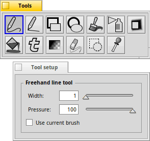
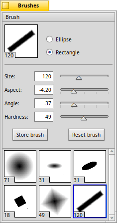

The other windows
Besides the canvas of the main window, there are a number of other windows, you may invoke when needed, or decide to keep open to always be available at a glance. Do see the options of the Settings to make some or all these windows float above the canvas.
ALT TAB will hide/show all these windows for an unobscured view of the canvas.
 |
ColorsYou can choose a different from the menu: , , , or . The additional "A" slider is the alpha channel, aka transparency. When in RGB mode, holding SHIFT when clicking a slider sets the other sliders to that same value. It's a quick way to set a shade of gray. Selecting a color with the left mouse button sets the foreground color, the right sets the background color. The same happens when you move a slider with the left/right mouse button. Below the big pane on the right, the color is shown as a hex-value that you can copy and paste when editing an HTML document, for example. The other way around is also possible, paste a hex-value from your HTML document to use the color in ArtPaint. Under you can create a with 8 to 64 colors, and . Above the palette is a text field where you can give each color set an individual name. The little arrow widgets beside it let you switch between the available color sets, also possible with PageUp/PageDown. |
 |
LayersHere you see all layers stacked up on each other, with a checkbox that controls if a layer is visible. The menu has commands to a new layer and to , or (i.e. merge with one below) the currently active layer. You can arrange layers by dragging them around and rename them by editing their text field. At the top is a slider to set a layer's transparency () and a menu to set a blending . Since ArtPaint implements these modes similarly to other graphics applications, you can find in-depth explanations for them online, e.g. in the Photoshop help or the GIMP docs. |
|  |
Tools & Tool setupHere you find all the available tools. By changing the Tools window size, you can re-arrange the icons. A right-click opens the tool's setup window. Every tool can also be selected with a 'quick key' on keyboard to avoid losing focus of the canvas. All tools and their settings (and keyboard key) are described on the pages of The tools. |
|  |
BrushesIn this window you configure the brush that can be used with various tools by ticking the checkmark "": First you decide on the shape of the brush, either or . The slider does the obvious. Its value is also visible in the bottom left corner of the preview box. deforms the shape of the brush. "0" being completely circular/square, up to "-10" to "+10" squashes the brush to become taller than wide and vice-versa. will rotate the brush up to 90° to the left or right. "0" being the upright default. Alternatively, you can click-and-drag the brush in the preview box at the top. Hold SHIFT to snap to 45° angles. Lastly, sets how crisp the brush edges are. Once you've set your brush up perfectly, you can click and the configuration is saved as a pane below. You can quickly switch between brushes with the ← → keys. Or click if you want to start afresh. To remove a stored brush you can choose to from the menu. |
Back: The settings Next: The tools